OPTION 01 OF 10
Option 1
A subtle softening of the current Shelly, with a slightly rounder face.
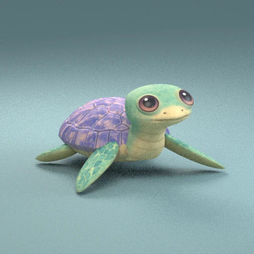
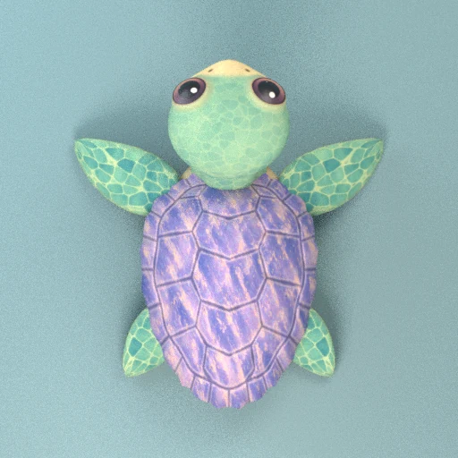
DESIGN PICKER
These are ten versions of Shelly’s actual 3D model, ordered from the mildest change to the most baby-like proportions. Her palette, lighting and camera angles stay consistent. Compare the normal and top-down views, then choose the number you like best.
This is a design survey for the character. The current game remains unchanged.
OPTION 01 OF 10
A subtle softening of the current Shelly, with a slightly rounder face.


OPTION 02 OF 10
A little more cheek fullness and a gently larger head.
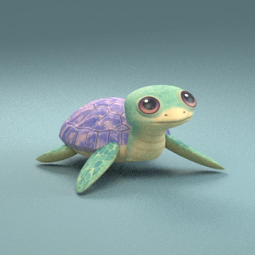
OPTION 03 OF 10
Rounder eyes and a softer, shorter-necked silhouette.
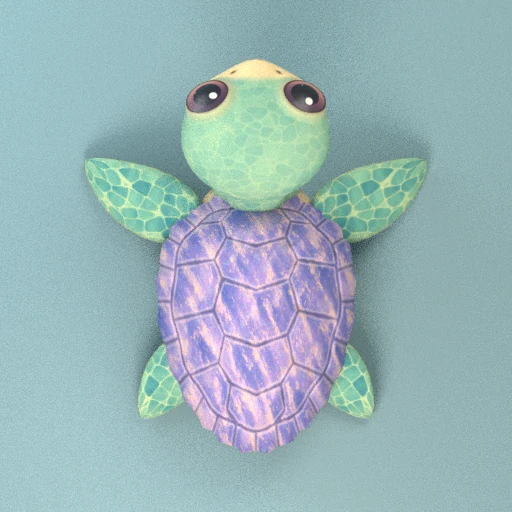
OPTION 04 OF 10
A fuller head with more noticeable baby proportions.
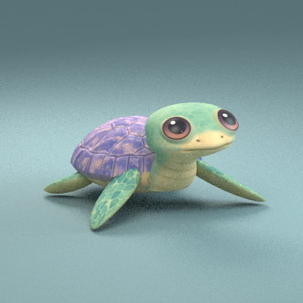
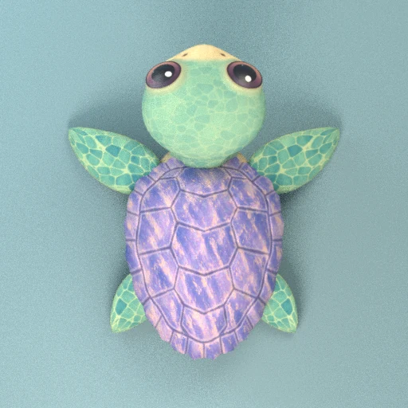
OPTION 05 OF 10
A balanced baby-turtle look with larger eyes and compact proportions.
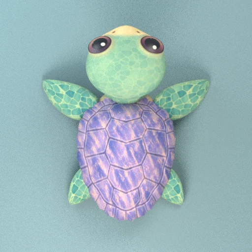
OPTION 06 OF 10
An increasingly round face and shorter, softer paddles.
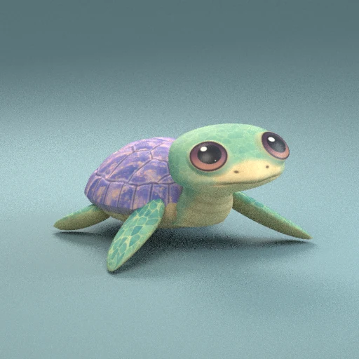
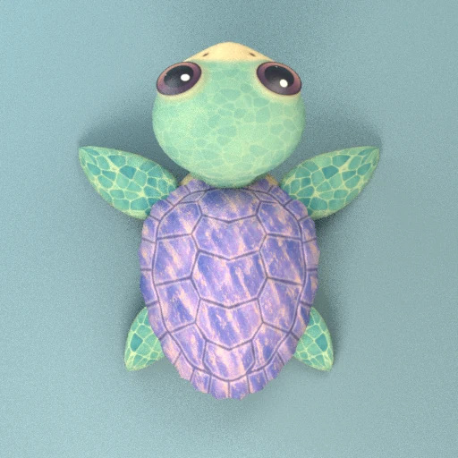
OPTION 07 OF 10
A large, gentle face with a compact hatchling body.
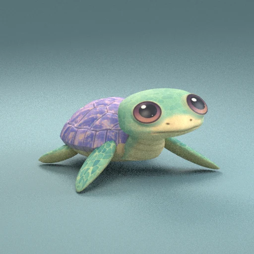
OPTION 08 OF 10
Very baby-like cheeks and eyes, with a smaller-looking shell.
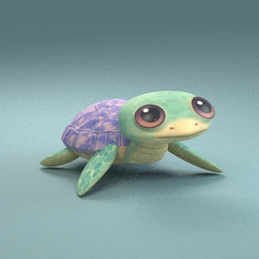
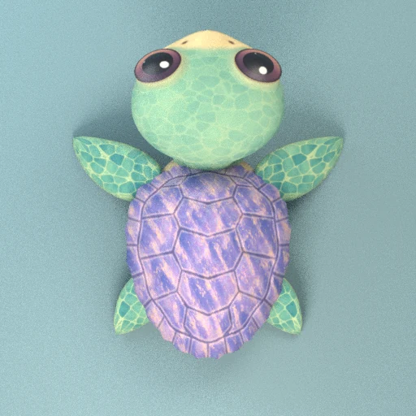
OPTION 09 OF 10
A pronounced big-head hatchling design with broad, sweet eyes.
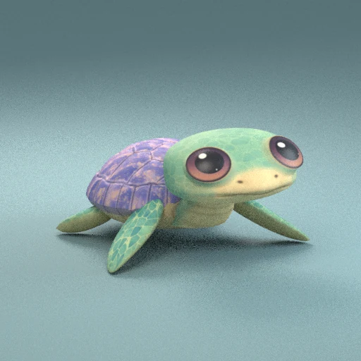
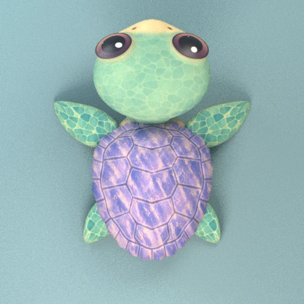
OPTION 10 OF 10
The most baby-like option: the fullest head, largest eyes and most compact body.
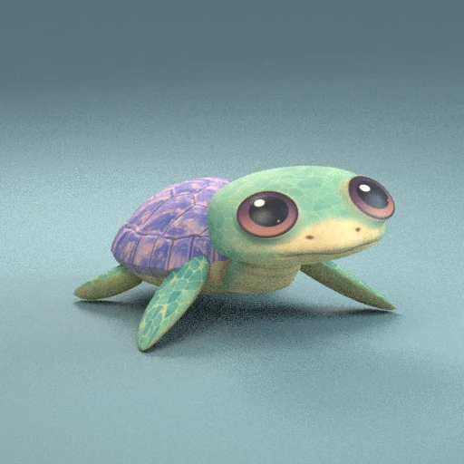
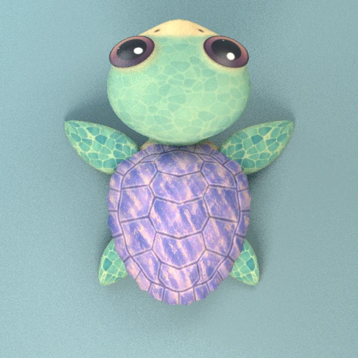